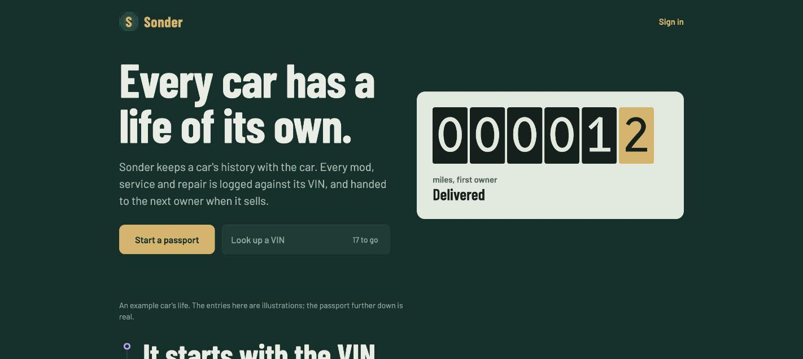

Open repositorySonder
A full-stack community application where vehicle history transfers between owners while authorship and access boundaries remain intact.
Inspect the build
PostgreSQL ownership periods preserve authorship and access boundaries. VIN onboarding uses the NHTSA vPIC API, with authentication, public vehicle pages, row-level security, and role-based permission tests.